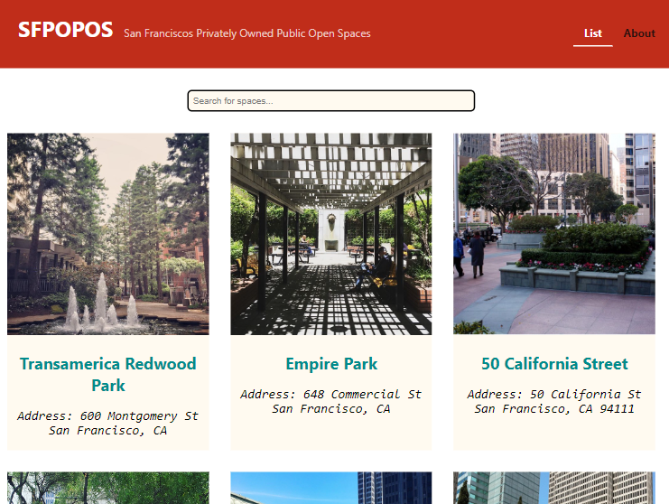
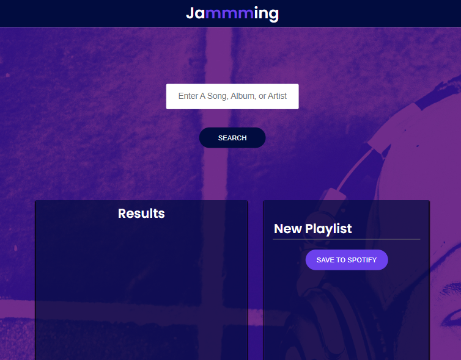
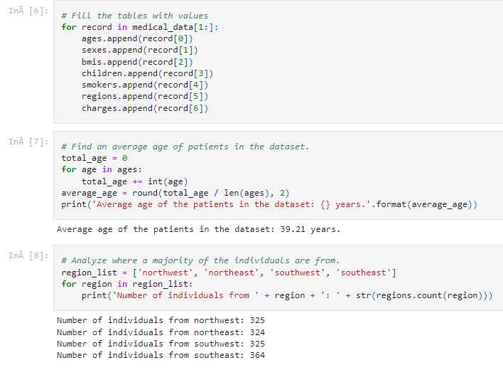

About Me
Hi, I'm Karol. Welcome to my portfolio website.
I am a self-taught programmer. I don't have a comercial experience in IT industry. I'm still learning new things. This site was created from scratch by me using front end developer stack [HTML, CSS, JavaScript] and Git for version control. It's also published on GitHub.
I like to write clean code, create things from nothing and see them working. Please check out some of my projects below. For more detailed description visit GitHub page for the project.
Projects
San Francisco POPOS

Search for San Francisco's Privately Owned Public Open Spaces.
Technology used: HMTLCSSJavaScriptReactNode.jsGitGitHub
See this project on GitHub.
See this project deployed with Netlify.
Jammming

Connect with Spotify API and create custom playlist on your Spotify account.
Technology used: HMTLCSSJavaScriptReactNode.jsGitGitHub
See this project on GitHub.
See this project deployed with Netlify.
Medical insurance data analysis

Basic analysis of insurance costs data from U.S.
Technology used: PythonJupyter NotebookGitGitHub
See this project on GitHub.